혼천의가 계산해 주는 것
이 영상이 소개하는 앱은 혼천의(渾天儀), 영문 이름 Orrery예요. 서버 없이 브라우저에서만 돌아가는 계산기로, 사주팔자·자미두수·서양 점성술 출생 차트를 한 번에 뽑아 줘요. 발표자는 사주를 돈 내고 본 적도 없을 만큼 관심이 없었는데, 이전 영상에 달린 "실력이 되면 사주 앱을 개발해 보고 싶다"는 댓글을 보고 소스코드가 통째로 공개된 이 프로젝트를 찾았다고 해요.
입력값: 생년월일시와 태어난 곳
첫 화면 제목 아래에 '서버 없이 브라우저에서 동작하는 사주팔자·자미두수·서양 점성술 계산기'라고 적혀 있어요. 입력 칸은 생년월일(양력), 시각과 분, 성별(남·여), 출생 위치예요. 시각을 모르면 '모름'을 켤 수 있고, 출생 위치는 '도시 선택'에서 서울을 고르면 위도·경도가 자동으로 채워져요.
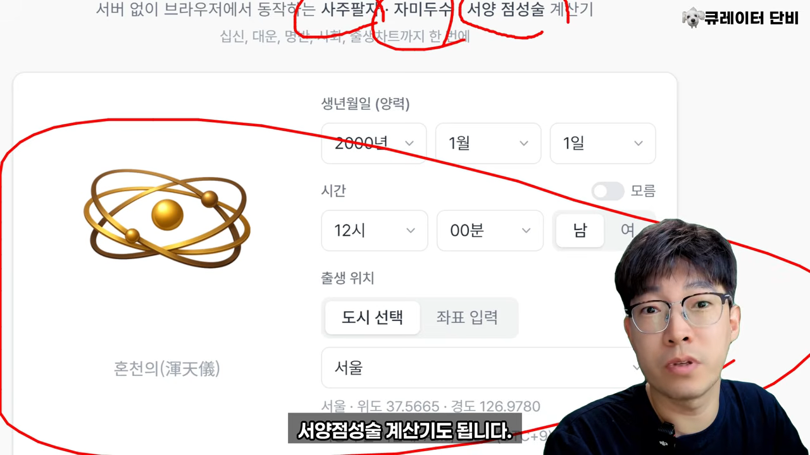
'좌표 입력'으로 바꾸면 위도와 경도를 직접 넣을 수 있고, 그 아래에 자동 추론한 시간대(Asia/Seoul, UTC(Coordinated Universal Time)+9)가 나와요. 발표자는 위치에 따라 분이 달라지기 때문에 이게 중요하다고 말해요. 분 하나 차이로 시주가 바뀌기도 하고, 월말·월초에 태어나면 월주까지 달라질 수 있어서예요.
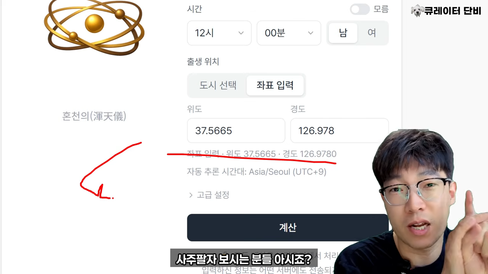
'고급 설정'을 펼치면 자시법을 고르는 버튼이 나와요. 통자시를 고르면 '23:30부터 子시, 일주를 다음날로 넘깁니다'라는 설명이 붙어요. 밤 11시대에 태어난 사람은 이 선택에 따라 일주가 달라져요.
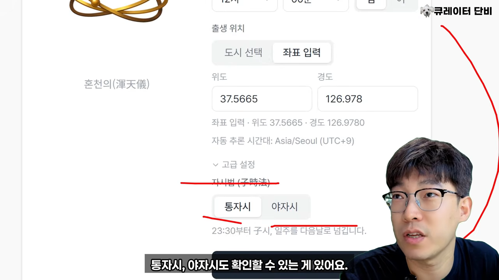
결과: 네 기둥, 명반, 출생 차트
사주팔자 결과는 시주·일주·월주·연주 네 기둥이에요. 기둥마다 위에 천간, 아래에 지지가 한자로 놓이고, 오행과 십신이 함께 붙어요. 아래 화면은 발표자가 자기 사이트에 디자인을 입힌 버전인데, 한자 값은 혼천의와 똑같았다고 해요. 예시는 시주 戊午, 일주 戊午, 월주 丙子, 연주 己卯예요.
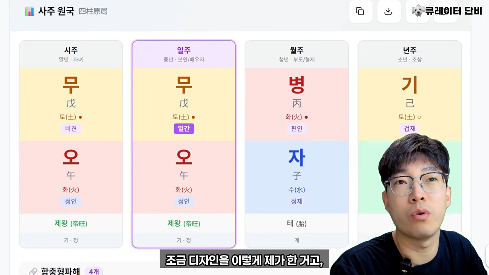
자미두수 탭에는 열두 칸짜리 명반이, 출생 차트 탭에는 행성 배치를 그린 원형 차트가 나와요. 표에는 수성·금성·화성 같은 행성과 키론, 북교점·남교점, 행운점이 별자리와 도수로 정리돼요. 발표자도 출생 차트는 "이게 뭔지 잘 모르겠다"고 솔직하게 말해요. 요점은 셋 다 입력 한 번으로 바로 계산된다는 거예요.
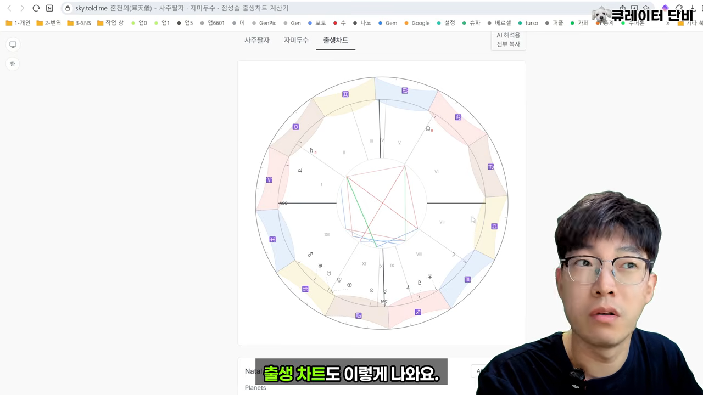
AI 해석용 복사: 계산은 앱이, 풀이는 AI가
혼천의는 풀이를 하지 않아요. 대신 결과 화면 오른쪽 위에 'AI 해석용 복사' 버튼이 있어요. 아래 출생 차트 표에서도 같은 버튼이 보여요. 표에는 행성마다 별자리, 도수, 하우스 번호가 적혀 있어요.
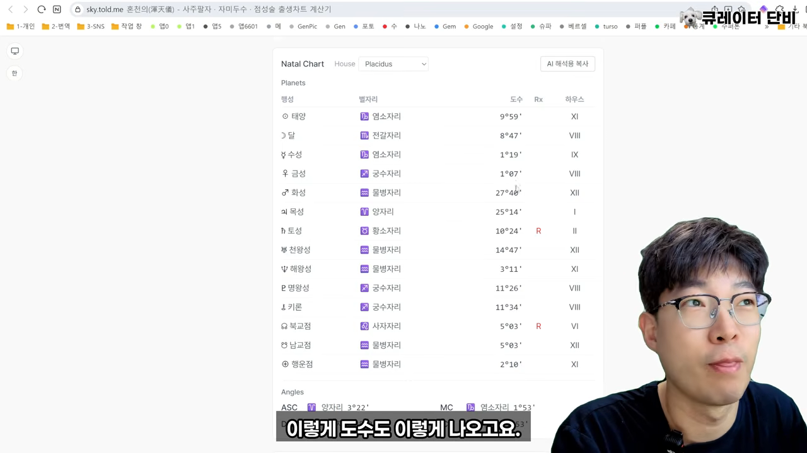
버튼을 누르면 계산값이 텍스트로 복사돼요. 메모장에 붙여 보면 맨 위에 四柱八字(男), 그 아래로 시주·일주·월주·연주별 십신, 천간, 지지, 운성, 공망, 지장간이 표처럼 줄 맞춰 나와요. 이어서 시-일, 시-월처럼 기둥끼리의 관계(형·충·파)도 적혀 있어요. 이 텍스트 전체가 3,258자예요.
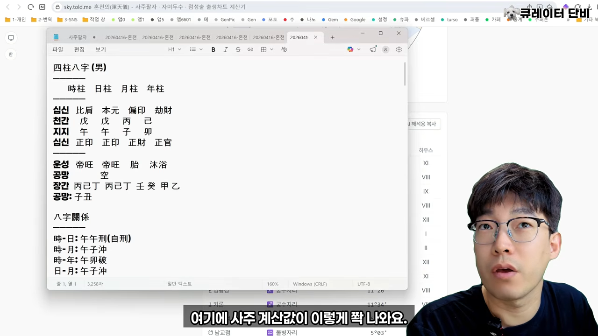
왜 풀이를 AI에게 넘길까요
발표자는 자기 사이트에 AI 풀이를 직접 붙여 뒀어요. 그러면 방문자가 사주를 볼 때마다 AI API(Application Programming Interface) 호출 비용이 운영자 돈으로 나가요. 혼천의는 계산과 코드만 공개하고 풀이는 사용자가 쓰는 AI에 맡겨요. 발표자는 이 구조 자체를 하나의 아이디어로 기억해 두라고 말해요.
네 AI에 똑같이 넣어 본 결과
발표자는 같은 텍스트를 네 AI에 붙여 넣고 "운세 좀 봐줘"라고 했어요. 인상은 이렇게 갈렸어요.
| AI | 발표자가 쓴 요금제 | 발표자 인상 |
|---|---|---|
| ChatGPT | 월 30만 원짜리 | 전체 핵심 요약, 성격적 강점, 힘들 수 있는 부분 Top 3까지 길게 풀어 줌 |
| Claude Opus 4.6 | 젠스파크에서 사용 | 전문가처럼 글을 가장 잘 씀 |
| Gemini | 29,000원짜리 | 너무 짧아서 신뢰가 덜 감 |
| Grok | 무료, 회원가입 없이 | 붙여 넣기만 해도 풀어 줌 |
ChatGPT 화면을 보면 '2) 성격적 강점' 아래 1, 2번 항목이 굵은 제목과 근거로 나뉘어 있어요. 발표자는 AI가 과거와 현재 데이터를 많이 학습했으니 그걸 바탕으로 해석하는 것이고, 지치지 않으니 몇백 명을 봐도 된다고 말해요.
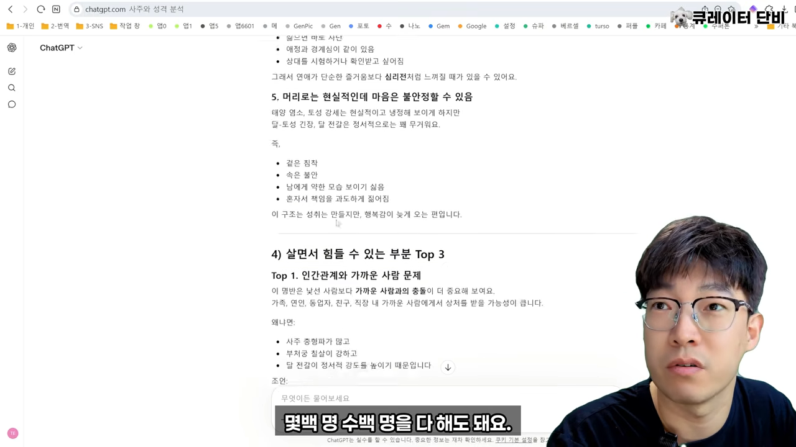
젠스파크에서 Claude Opus 4.6에 넣은 답은 맨 끝이 '마무리'로 정리돼요. 사주 용어(帝旺, 紫微 같은 한자)를 섞어 가며 "30대 중반부터 본격적으로 꽃이 피는 만시발복 타입"처럼 결론을 내려요. 발표자가 글을 잘 쓴다고 평가한 쪽이 이 답이에요.
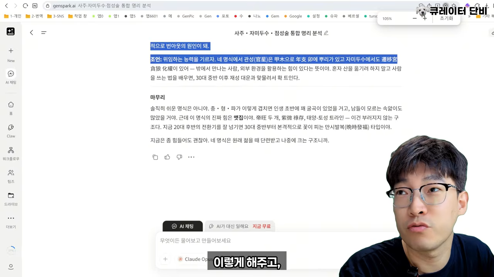
소스코드 받아서 내 컴퓨터에서 돌리기
영상이 보여 준 전체 흐름은 이래요. 발표자도 중간에 "GitHub에서 받고, 바이브 코딩 도구에서 폴더를 열고, 두 명령으로 로컬에서 실행하는 것까지 봤다"고 한 번 정리해요.
flowchart LR A["GitHub 저장소"] --> B["Download ZIP"] B --> C["Cursor에서 폴더 열기"] C --> D["npm install"] D --> E["npm run dev"] E --> F["내 컴퓨터에서 실행"] F --> G["말로 지시해서 고치기"]
저장소 둘러보기
혼천의 소스는 GitHub의 rath/orrery 저장소에 있어요. 오른쪽 About 칸에 사이트 주소 sky.told.me와 AGPL-3.0 license가 적혀 있고, 위쪽에 Star 80, Fork 19가 보여요. 발표자는 별 80개면 꽤 높은 편이라고 말해요.
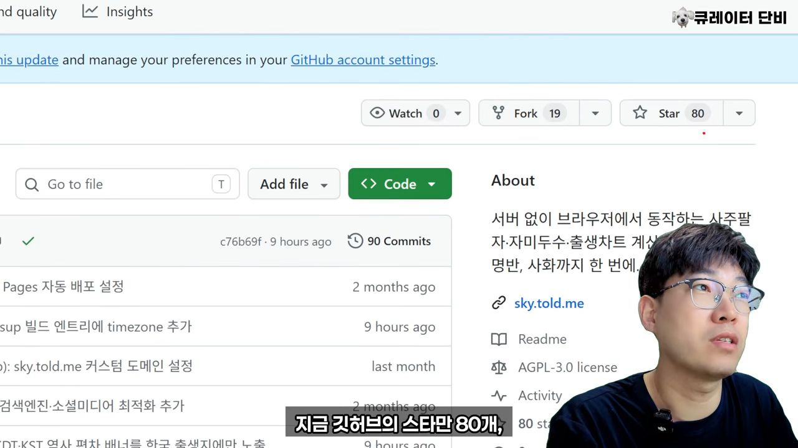
파일 목록에는 README가 언어별(en·ja·zh)로 있고, AGENTS.md와 CLAUDE.md도 보여요. LICENSE 파일 옆 커밋 메시지는 'chore: change license from MIT to AGPL-3.0'이에요. 처음엔 MIT였다가 AGPL-3.0으로 바꿨다는 기록이에요.
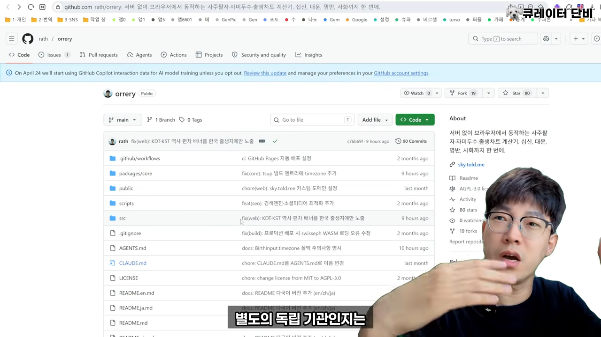
LICENSE 줄의 커밋 메시지에서 라이선스가 MIT에서 AGPL-3.0으로 바뀐 걸 확인할 수 있어요. 영상 06:01에서 보기src 폴더를 열면 assets, components, i18n, types, utils 폴더와 index.css, main.tsx가 있어요. 발표자는 i18n이 번역 관련 파일이라고 설명해요. 이 앱이 한국어·영어·중국어 화면을 지원하는 이유예요.
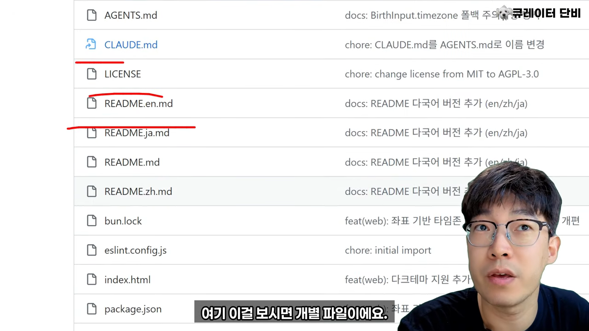
받아서 실행하기
- 저장소에서 초록색 Code 버튼을 누르고
Download ZIP을 골라요 — 주소(https://github.com/rath/orrery.git)를 복사해 AI 코딩 도구에 "이거 받아 줘"라고 해도 돼요. orrery-main.zip이 내려받아져요 - 압축을 풀고 Cursor에서 새 창을 열어 그 폴더를 지정해요 왼쪽 탐색기에 packages, src, package.json 같은 파일이 보여요
- 터미널에서
npm install로 의존성을 받아요 added 93 packages 같은 메시지가 나와요 npm run dev로 개발 서버를 띄워요 — 발표자는 소문자로 써야 한다고 짚어요. 로컬 주소에서 혼천의 화면이 떠요
Code 버튼을 누르면 Local 탭에 Clone 주소와 함께 'Open with GitHub Desktop', 'Open with Visual Studio', Download ZIP이 나와요. 맨 아래 Download ZIP이 영상에서 쓴 방법이에요.
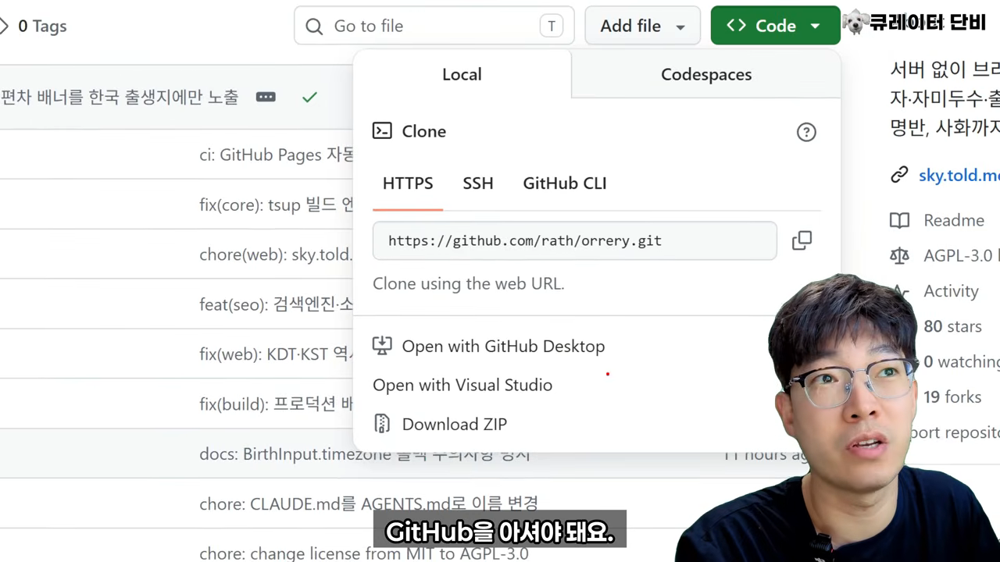
Download ZIP 한 번이면 전체 소스가 받아져요. 영상 06:49에서 보기압축을 풀면 GitHub에서 보던 것과 같은 폴더와 파일이 그대로 나와요. 발표자는 "어떻게 개발하냐고 묻지 말고 이 소스를 보면서 AI에게 계산을 어떻게 했는지 물어보라"고 말해요.
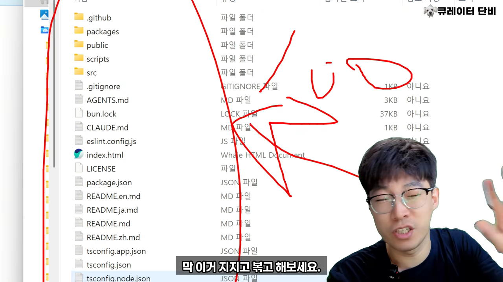
Cursor 터미널에서 npm install을 돌린 결과예요. 'added 93 packages, and audited 348 packages in 1s', 'found 0 vulnerabilities'가 찍혀요. 발표자는 의존성이 다른 개발자들이 만들어 둔 플러그인 같은 부품이고, 이게 소스코드와 합쳐져야 웹이든 앱이든 만들어진다고 설명해요.
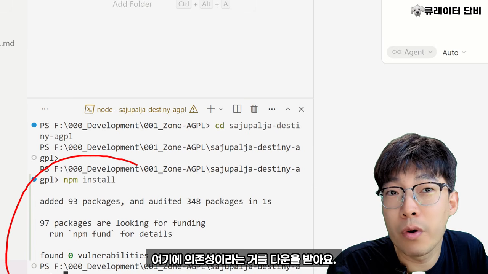
npm run dev를 실행하면 Cursor 안의 미리보기 창에 혼천의가 떠요. 처음 화면은 영어이고 기본값은 2006년 4월 16일 13시 53분이에요. Calculate를 누르면 바로 계산돼요. 발표자는 이게 웹사이트가 아니라 자기 컴퓨터에 설치한 것이라는 점을 강조해요.
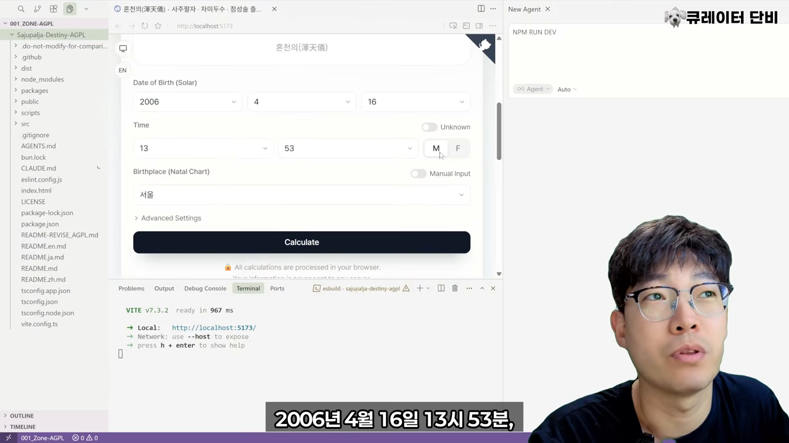
발표자는 한자를 잘 못 읽어서 자기 버전을 따로 고쳤어요. 아래 자미두수 화면을 보면 한자 옆에 작은 글씨로 한글 음이 붙어 있고, 2006年 4月 15日 3時 4分처럼 생년월일시가 가운데에 크게 들어가 있어요. 화면도 원래보다 넓어요.
바이브 코딩: 말로 고치기
소스를 받아 실행까지 했으면 이제 고쳐 볼 차례예요. 발표자는 코드를 한 줄도 쓰지 않아요. Cursor 채팅창에 원하는 걸 우리말로 적고 엔터를 누를 뿐이에요. 이렇게 말로 시켜서 프로그램을 고치는 방식을 바이브 코딩이라고 불러요.
"글자가 너무 작다, 키워 줘"
첫 지시는 '사주 계산 후 값들이 글자가, 폰트가 너무 작다. 좀 더 크게 가독성 있게 해줘라'예요. 왼쪽 결과 화면에는 日柱, 月柱 아래 乙, 壬, 亥, 辰 같은 한자 칸이 작게 보여요.
AI는 먼저 '사주 계산 결과 화면의 폰트 크기를 키우기 위해 관련 코드를 찾습니다'라고 밝히고 로컬 파일을 검색해요. 그다음 SajuView.tsx와 PillarTable.tsx를 고쳐요. 아래 diff에서 빨간 줄의 text-base가 초록 줄에서 text-lg로 바뀐 게 보여요. Tailwind CSS(Cascading Style Sheets)의 글자 크기 클래스를 한 단계씩 올린 거예요.
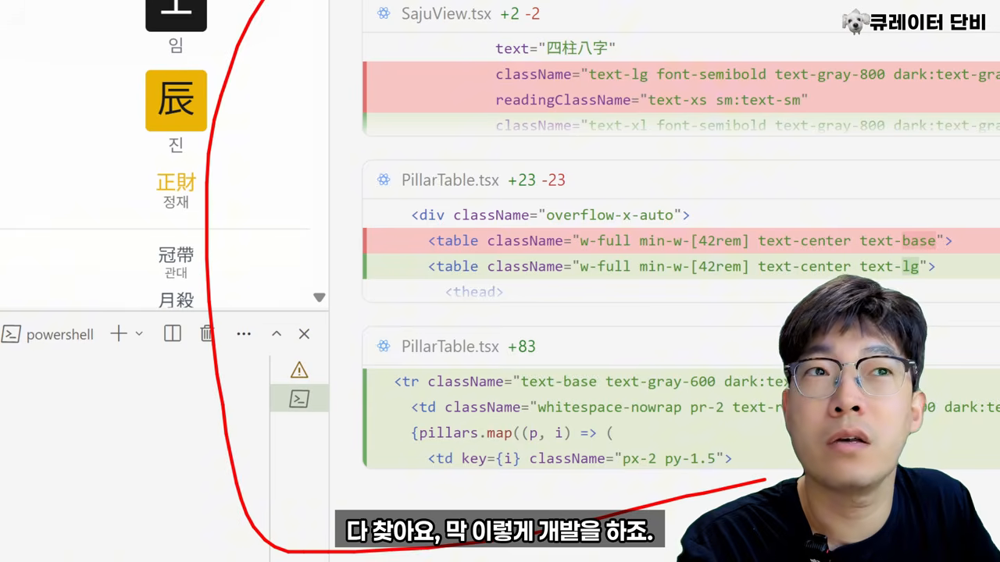
작업이 끝나면 '변경 요약'이 남아요. 四柱八字 제목은 text-xl로, 명식표 본문은 text-lg로, 천간·지지 한자는 text-3xl로 키웠다고 항목별로 적혀 있어요. 마지막 줄에는 빌드는 실행하지 않았다는 말과, 더 키우고 싶은 구역이 있으면 알려 달라는 말이 붙어요.
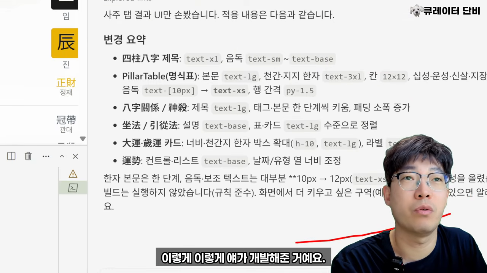
자미두수 탭은 여전히 작아서, 발표자는 화면을 캡처해 AI에게 주면서 "여기도 너무 작은데 폰트 좀 더 키워 줘"라고 다시 시켜요. 그다음엔 "야, 조금만 더 키워 줘"가 지시의 전부예요. 그러자 가운데 정보와 주변 칸이 확 커졌어요.
"명반 가운데 색상 튀게 해 줘"
다음 지시는 '자미두수 명반 쪽 가운데 색상 튀게 하고, 그 주변 360도 테이블들 가독성 있게 색상 구분 좀 해줘'예요. AI가 남긴 요약을 보면 가운데 패널은 보라·자홍·호박색 그라데이션 배경과 안쪽 그림자를 넣었고, 다크 모드도 맞췄어요. 주변 12궁은 지지마다 다른 파스텔 배경을 주고, 명궁이 있는 칸에는 골드색 링을 둘렀어요.
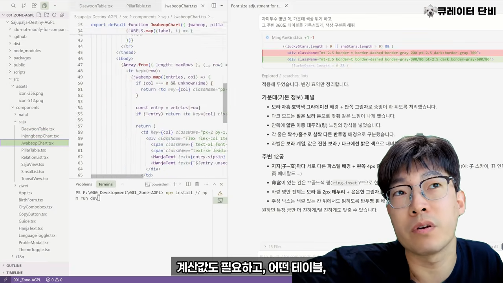
결과 화면이에요. 가운데 기본 정보 칸은 연보라 바탕으로 도드라지고, 둘레 칸들은 분홍·노랑·하늘색처럼 칸마다 색이 달라졌어요.
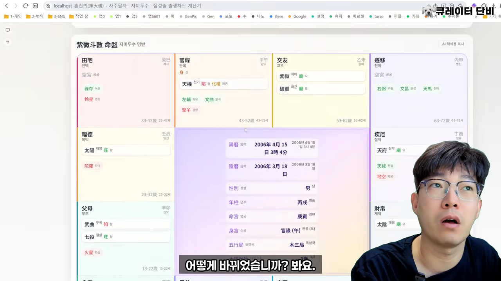
가운데를 확대하면 陽曆 2006年 4月 15日 3時 4分, 陰曆 2006年 3月 18日이 굵게 강조돼 있어요. 가독성을 올려 달라는 말에 AI가 양력·음력처럼 중요한 정보를 스스로 골라 진하게 만든 거예요. 그 아래 性別, 年柱, 命宮, 身宮, 五行局 옆에도 한글 음이 붙어 있어요.
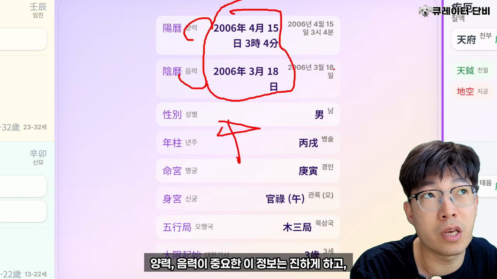
로컬에서 하는 게 안전한 이유
발표자는 이 작업을 굳이 내 컴퓨터 안에서만 하라고 강조해요. 사주 사이트를 인터넷에 올리고 결제를 받고 개인정보를 받으려면 시간과 공이 많이 들어요. 개인정보가 새면 형사처벌이나 민사소송까지 갈 수 있어요. 로컬에서 고쳐 보는 건 그런 부담이 없어요.
한계도 짚어요. 전문 개발자는 고칠 코드를 직접 골라 채팅에 넣고(Cursor의 Ctrl+L) 그 부분만 고치게 해요. 발표자처럼 말로 넓게 시키면 AI가 다른 곳까지 건드릴 수 있어요. 실제로 앱 제목을 바꿔 달라고 하자 AI는 제목이 표시되는 곳을 전부 찾아 바꿨어요.
코드로 공부하기, 그리고 왜 해 볼 만한가
발표자가 이 저장소를 권하는 진짜 이유는 공부 재료라서예요. 화면만 고치는 데서 그치지 말고, 계산 로직과 데이터가 어디 있고 왜 그렇게 짰는지 AI에게 물어 가며 읽어 보라고 해요.
계산 엔진은 packages/core/src에
Cursor 왼쪽 탐색기를 보면 packages/core/src 아래에 cities.ts, constants.ts, kdt.ts, natal.ts, pillars.ts, saju.ts, types.ts, ziwei.ts와 ephemeris 폴더가 있어요. 이름 그대로 도시 좌표, 상수, 출생 차트, 네 기둥, 사주, 자미두수를 맡는 파일이에요. 열려 있는 cities.ts에는 한국어 초성 검색용 코드가 보여요. 도시 이름을 초성만으로 찾게 해 주는 부분이에요.
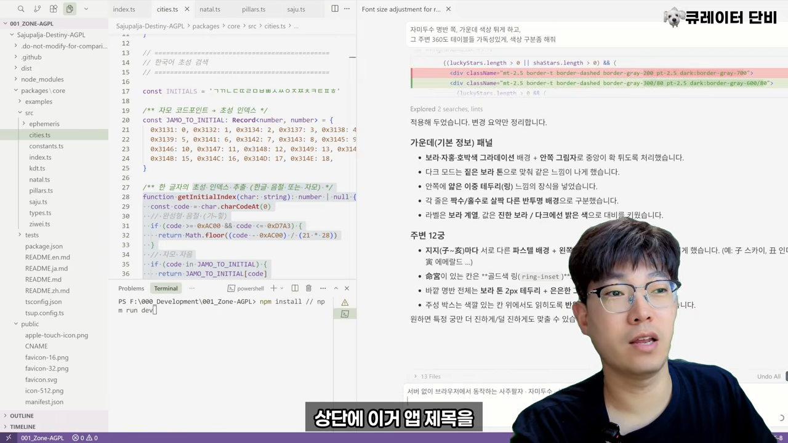
발표자 설명으로는 이 안에 대운 테이블 계산, 절기 상수, 사주 계산, 십신, 지장간, 운성 데이터가 다 들어 있어요. 서양 점성술용 데이터도 같이 있어요. "왜 여기서 이런 코드를 썼을까", "왜 이런 데이터가 필요할까"를 물어 가며 읽으면 그게 공부라는 거예요.
외주로 맡기면 얼마나 들까요
발표자는 크몽 같은 외주 시장에서 상용 사주 앱 개발이 단계에 따라 500만 원에서 3천만 원, 더 비싸면 몇천만 원이라고 말해요. 이 저장소는 그만한 코드와 운영 중인 사이트를 통째로 공개해 뒀어요. 그래서 바이브 코딩 도구에 한 달 20달러(약 3만 원)를 내고 직접 해 보는 게, 홈페이지 만들기 강의를 몇백만 원에 사는 것보다 낫다고 봐요. 목표가 꼭 돈벌이일 필요는 없고, 자영업자라면 랜딩 페이지 정도는 스스로 만들 수 있다는 거예요.
전문 개발자들이 비전문가의 바이브 코딩을 깎아내리는 데 대해서도 한마디 해요. 바이브 코딩의 보안 위험은 이미 다 알려졌으니, 개발자 수요는 보안 쪽으로 옮겨 갈 거라고 봐요. 생업이 있는 사람이 책을 펴 놓고 한 줄씩 타이핑하며 배우기는 어렵지만, 이제는 아이디어를 말로 바로 반영할 수 있다는 거예요.
계산값을 AI에 넣어 쓰는 법
발표자는 로컬에서 2006년 4월 15일 3시 4분, 서울로 계산한 뒤 AI 해석용 복사를 눌러요. 브라우저 탭 제목은 발표자가 고친 대로 '평생 100% 무료로 보는 사주팔자 프로그램'이에요. 복사한 텍스트 아래에 "사주 좀 봐줘, 해석해 줘" 정도의 짧은 프롬프트만 붙여도 대운과 인생의 큰 그림까지 풀어 줘요. 혼천의 화면 아래에도 클로드나 ChatGPT, 제미나이에 넣고 해석을 요청하라는 안내가 있어요.
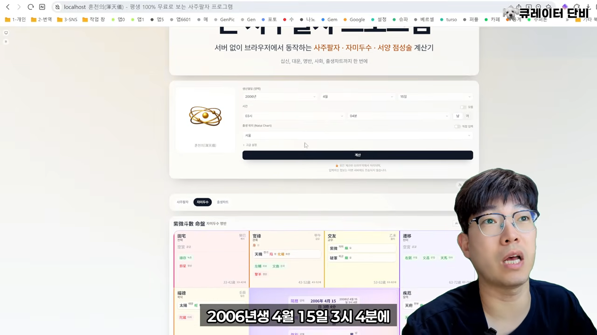
발표자는 쓰는 사람에 따라 활용법도 달라진다고 말해요. 사주를 배우는 사람은 정확도를 높여 둔 이 계산 결과를 자기가 배운 지식과 맞춰 볼 수 있어요. 사주 앱을 운영하는 사람은 프롬프트를 다듬고, 자기 계산값이 맞는지 이 코드와 비교하며 서비스를 키울 수 있어요. 발표자 자신의 사이트는 비용 때문에 싼 AI를 쓰고, 표본도 자기와 아내 둘뿐이라 틀릴 수 있다고 인정해요.
AGPL-3.0: 배포하는 순간 생기는 의무
발표자가 "이거 못 보면 나중에 큰일 날 수 있다"며 가장 길게 다룬 부분이에요. 혼천의 README에는 원작자가 직접 쓴 AGPL-3.0 쉬운 설명이 붙어 있고, 발표자는 이걸 그대로 가져와 하나씩 읽어 줘요.
할 수 있는 것, 지켜야 하는 것, 할 수 없는 것
설명은 세 묶음이에요. '자유롭게 할 수 있는 것'에는 개인적으로 사용, 소스코드를 읽고 공부, 수정·개선 후 재배포가 있어요. '반드시 지켜야 하는 것'은 같은 라이선스(AGPL-3.0) 유지, 소스 코드 공개 의무, 변경 사항 명시, 저작권 표시 유지 네 가지예요. '할 수 없는 것'은 소스 비공개 상태로 서비스 운영, 다른 라이선스로 변경이에요. 발표자는 파란 상자로 첫 두 줄과 지켜야 할 의무 세 줄을 묶어 강조했어요.
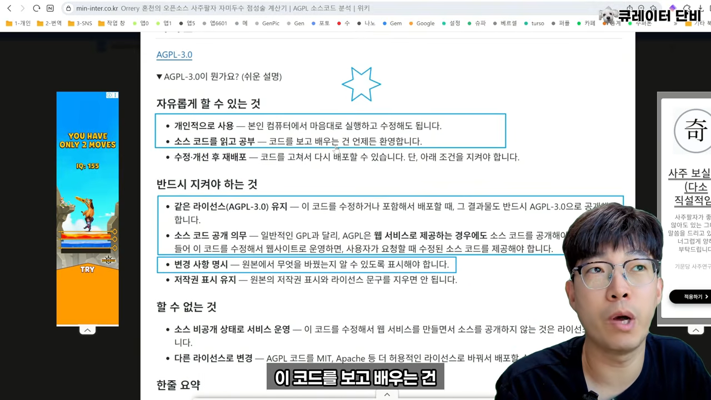
발표자가 내 컴퓨터에서 한글 병기를 넣고 색을 입힌 건 첫 묶음에 해당해서 자유예요. 문제는 배포예요. 고친 걸 홈페이지에 올리는 순간 디자인 파일, 계산 방식, 바꾼 부분까지 프로그램 전체 소스를 GitHub든 압축 파일이든 공개해야 하고, 같은 AGPL-3.0으로 내야 해요. 원작자 GitHub 링크와 저작권 표시도 남겨야 해요.
발표자는 GPL과의 차이도 짚어요. 원래 GPL은 서버에서 돌리기만 하고 프로그램을 나눠 주지 않으면 공개 의무를 피할 수 있는 구멍이 있었어요. AGPL은 그 구멍까지 막아서 웹 서비스로 제공하는 것도 공개 대상으로 넓힌 라이선스라는 거예요.
변경 사항은 처음부터 기록해 두기
지켜야 할 것 중 발표자가 특히 놀란 건 변경 사항 명시예요. 원본에서 무엇을 바꿨는지 알 수 있게 표시해야 해요. 그래서 발표자는 AI에게 "AGPL이므로 변경된 파일은 모두 기록하고, 무엇을 수정했는지 상세히 남겨라"라고 미리 지시해 뒀어요. 아래가 그렇게 쌓인 기록이에요. 파일 경로마다 한 줄씩 무엇을 바꿨는지 적혀 있어요.
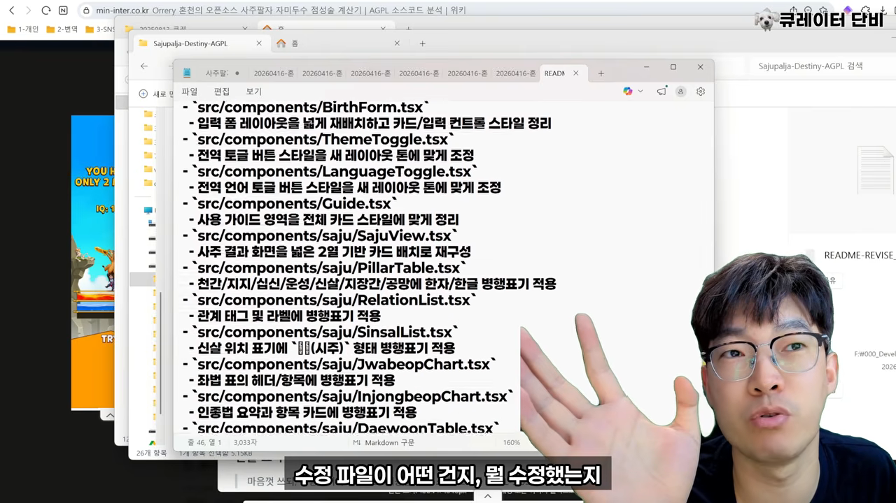
AGPL 전파: 섞이면 같이 공개 대상
발표자가 가장 위험하다고 본 건 이거예요. 이미 운영 중인 사이트에 고친 혼천의를 올리면, 그 사이트가 같이 쓰는 공통 컴포넌트(TSX(TypeScript XML) 파일 같은 것)나 계산 코드가 섞여 들어가요. 그러면 거기 연결된 다른 프로그램까지 소스를 공개해야 할 수 있어요. 발표자는 AI가 이걸 'AGPL 전파'라고 부른다고 전하고, 그래서 배포하려면 새 사이트에 따로 올려야 한다고 말해요.
강한 카피레프트, 원작자의 뜻
AGPL 코드는 MIT나 Apache 같은 다른 라이선스로 바꿀 수 없어요. 누가 언제 고치든 AGPL-3.0을 유지한 채 전체 소스를 공개해야 해요. 발표자는 이걸 무료를 끝까지 이어 가는 강한 카피레프트라고 불러요. 상업적으로 써도 되지만, 대신 원작자처럼 공개하라는 조건이에요. 위반하면 저작권 위반이고 라이선스 위반이니, 라이선스 전문을 꼭 읽고 지키라고 당부해요.
발표자는 원작자들이 들인 시간도 언급해요. README의 크레딧을 보면 사주 만세력, 자미두수 명반, 점성술 출생 차트가 각각 어디서 왔는지 적혀 있어요. 기술 스택에는 React 19, TypeScript 5, Vite 7, Tailwind CSS 4와 함께 음력 변환을 맡는 lunar-javascript가 있어요. 계산 엔진은 @orrery/core라는 npm 패키지로도 쓸 수 있다고 안내돼 있어요.
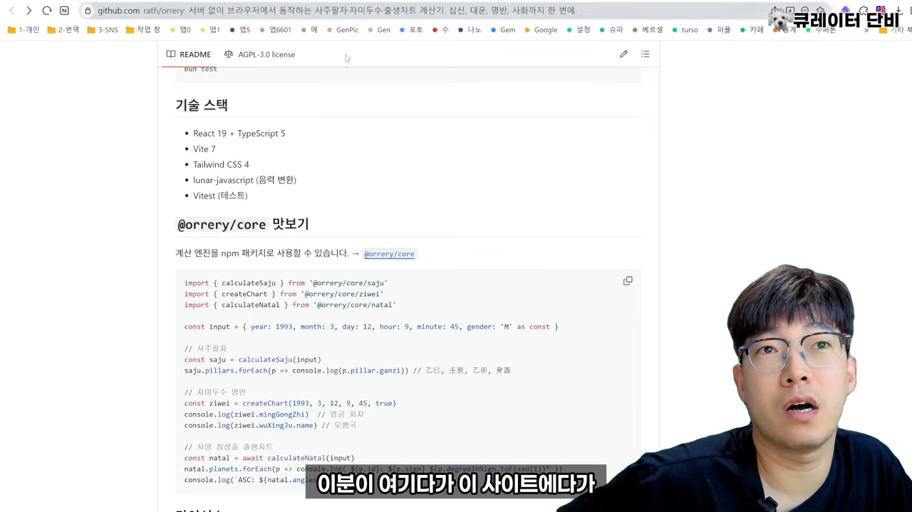
소스를 닫고 싶다면: MIT 라이브러리라는 다른 길
AGPL이 부담스럽다면 길이 하나 더 있어요. 발표자는 자기 사이트에 사주 기능을 올려 두고 싶다면 혼천의 대신 MIT 라이선스로 공개된 사주 라이브러리를 바탕으로 만들라고 권해요. 이전 영상에서 소개한 '포춘텔러'와 '만세력 라이브러리'가 그 예예요. 발표자 자신의 사주 사이트도 MIT 라이선스 기반으로 만들었다고 해요.
왜 굳이 갈라서 쓰냐면, 상업 서비스에서 소스 공개는 그 자체로 위험이 되기 때문이에요. 잘 운영되는 서비스를 누군가 통째로 복사해 쓸 수 있어요. 영상에서 말한 두 길을 나란히 놓으면 이래요.
| 기준 | 혼천의 (AGPL-3.0) | MIT 라이선스 사주 라이브러리 |
|---|---|---|
| 내 컴퓨터에서 쓰고 공부 | 자유 | 자유 |
| 고쳐서 상업적으로 쓰기 | 가능 | 가능 |
| 배포·웹 서비스 시 소스 공개 | 전체 공개해야 함 | 공개하지 않아도 됨 |
| 라이선스 바꾸기 | 안 됨 (AGPL-3.0 유지) | 영상에서 다루지 않음 |
| 상업 서비스에서의 약점 | 남이 서비스를 통째로 복사할 수 있음 | 영상에서 다루지 않음 |
발표자의 결론은 단순해요. 혼천의는 상업용으로는 약점이 있지만 공부하기에는 충분하고, 사주 계산도 잘 돼요.
차별점은 데이터에서 나와요
마지막으로 발표자는 앱의 차별점을 어디서 만들지 이야기해요. 기존 서비스를 강화하거나, 정부와 공공기관이 푸는 데이터를 API로 받아 내 데이터베이스에 접목하는 데서 나온다는 거예요. 직방, 아실, 네이버 부동산 같은 부동산 서비스도 결국 지도와 공공기관 API 데이터를 엮어 만들었다고 예를 들어요.
출발점으로 보여 준 게 GitHub의 public-apis-4Kr이에요. 제목 그대로 '한국 서비스에 이용 가능한 Public API 모음'이고, '정부 & 공공기관' 표에 공공데이터포털, 공정위 데이터포털, 국가기록원 검색 API, 국토교통부 실거래가, 기상청 단기예보 같은 API가 설명과 함께 정리돼 있어요. 발표자는 한국 서비스용 에이전트 스킬 모음인 K-Skill도 같이 언급해요.
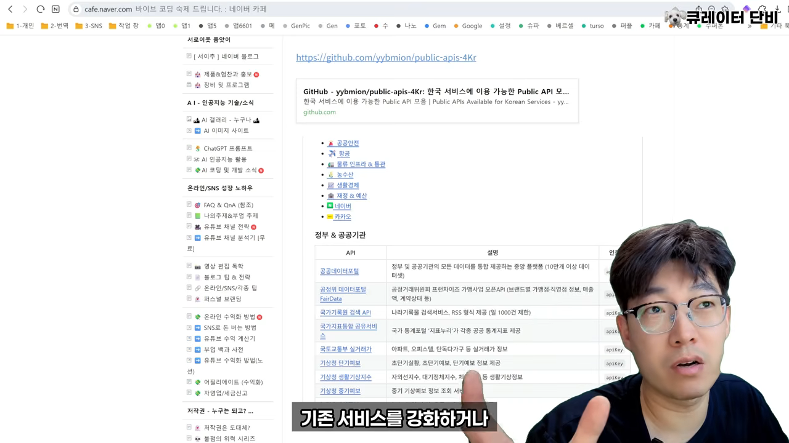